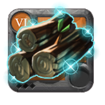

<ion-header>
  <ion-toolbar color="medium">
    <ion-buttons slot="start">
      <ion-back-button defaultHref="/"></ion-back-button>
    </ion-buttons>
    <ion-title>Material de Refino</ion-title>
  </ion-toolbar>
</ion-header>

<ion-content>
  
  <ion-card>
    <ion-card-header>
      <ion-card-title>Tábuas de Carvalho-sangue Raros (T6).2</ion-card-title>
    </ion-card-header>
  
    <ion-card-content>
      
      <h2>Material raro usado para criação</h2>
      <br><br>
      <h2>Requisitos de criação</h2>

      <table border="1">
        <tr>
          <th>Item</th>
          <th>Nome</th>
          <th style="text-align: center;">Quantia</th>
        </tr>
        <tr>
          <td></td>
          <td>Troncos de Carvalho-Sangue Raros</td>
          <td>4</td>
        </tr>
        <tr>
          <td></td>
          <td>Tábuas de Cedro Raros</td>
          <td>1</td>
        </tr>
      </table>
    </ion-card-content>
  </ion-card>

</ion-content>
